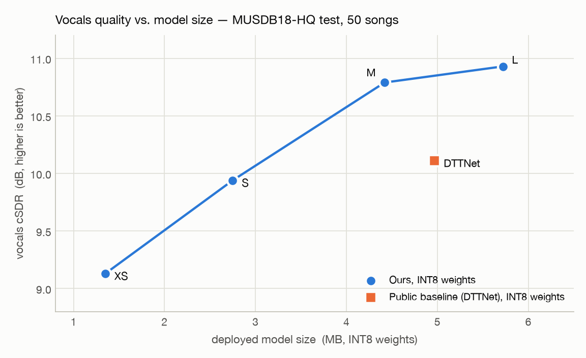
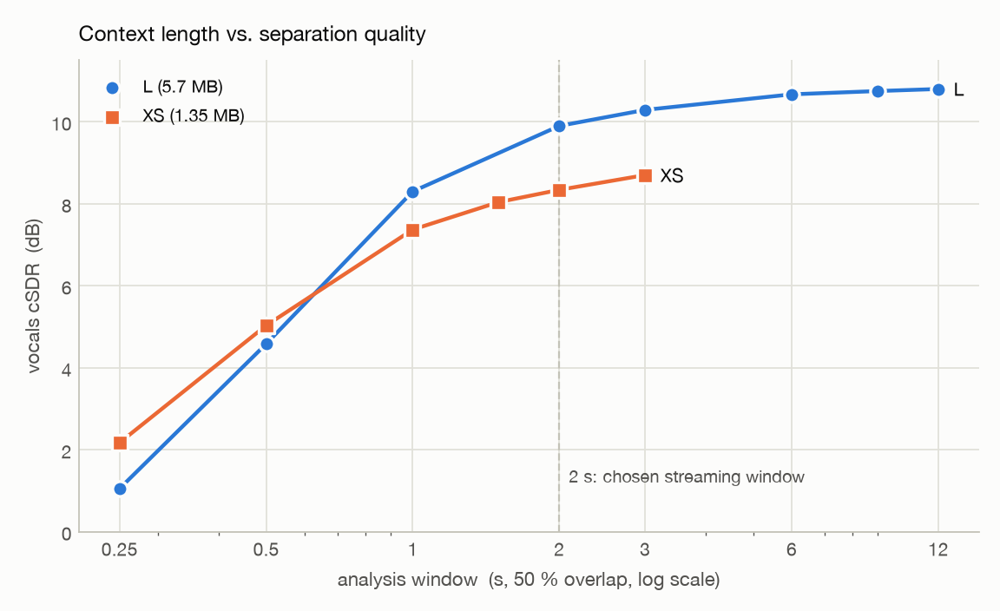
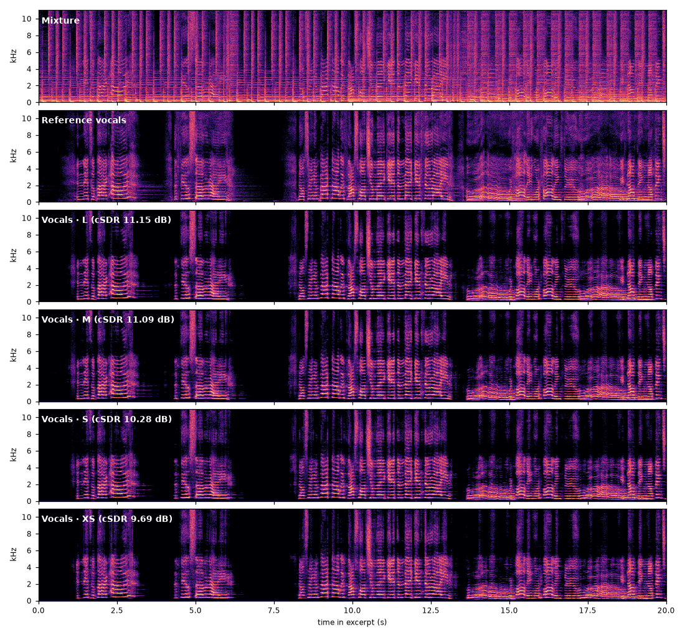
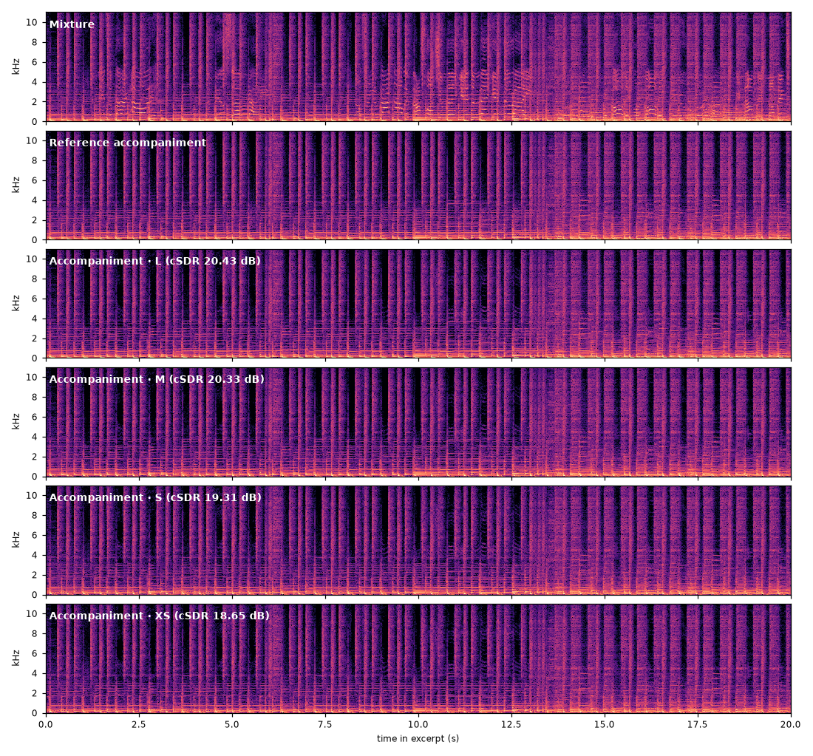

Lightweight Music Source Separation — Listening Test
Vocals and accompaniment separated from a 44.1 kHz stereo mix by one model family at four sizes (1.35 – 5.7 MB deployed, INT8 weights). Accompaniment is the mixture minus the separated vocals, so a single model gives both stems. The clip is a 20 s excerpt (1:35 – 1:55) of Juliet's Rescue – Heartbeats from the MUSDB18-HQ test set, which was never used in training. Use headphones.
Objective evaluation
MUSDB18-HQ test set, all 50 songs. cSDR is the median of the 1 s chunk SDRs pooled over all songs. Offline inference uses 12 s windows with 75 % overlap. ↑ higher is better.
| Size | Params | GMACs / 2 s audio | Size INT8 | Vocals cSDR FP32 | Vocals cSDR INT8 ↑ |
|---|---|---|---|---|---|
| L | ≈ 5.5 M | 38.8 | 5.72 MB | 10.95 | 10.93 |
| M | ≈ 4.2 M | 31.6 | 4.42 MB | 10.81 | 10.79 |
| S | ≈ 2.6 M | 16.2 | 2.75 MB | 9.95 | 9.94 |
| XS | ≈ 1.2 M | 7.16 | 1.35 MB | 9.13 | 9.13 |
| DTTNet (public weights, re-scored) | ≈ 5.0 M | – | 4.97 MB | 10.13 | 10.11 |


Listening clips
Scores are cSDR against the reference stem: for the full song, and for the 20 s excerpt behind the players.
Vocals 20 s excerpt · 44.1 kHz stereo

| MixtureMUSDB18-HQ test set | |
| LINT8 weights · ≈ 5.5 M params · 5.72 MBcSDR song 11.15 · excerpt 11.23 dB | |
| MINT8 weights · ≈ 4.2 M params · 4.42 MBcSDR song 11.09 · excerpt 11.30 dB | |
| SINT8 weights · ≈ 2.6 M params · 2.75 MBcSDR song 10.28 · excerpt 10.39 dB | |
| XSINT8 weights · ≈ 1.2 M params · 1.35 MB · smallestcSDR song 9.69 · excerpt 10.16 dB | |
| Reference vocalsreference stem |
Accompaniment 20 s excerpt · 44.1 kHz stereo

| MixtureMUSDB18-HQ test setcSDR as accompaniment: song 6.53 · excerpt 9.31 dB | |
| LINT8 weights · ≈ 5.5 M params · 5.72 MBcSDR song 20.43 · excerpt 20.95 dB | |
| MINT8 weights · ≈ 4.2 M params · 4.42 MBcSDR song 20.33 · excerpt 20.88 dB | |
| SINT8 weights · ≈ 2.6 M params · 2.75 MBcSDR song 19.31 · excerpt 19.90 dB | |
| XSINT8 weights · ≈ 1.2 M params · 1.35 MB · smallestcSDR song 18.65 · excerpt 19.11 dB | |
| Reference accompanimentreference stem |